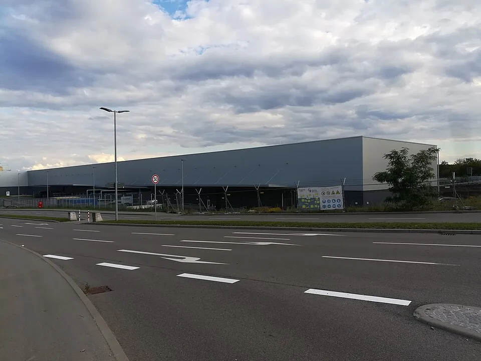

▲ 메르세데스-벤츠의 최대 생산거점인 독일 진델핑겐 공장 전경 ⓒ Wikimedia Commons
독일 3대 완성차업체 가운데 마지막까지 버티던 메르세데스-벤츠마저 자국 내 공장 폐쇄를 공식 검토하기 시작했다. 미하엘 시베 메르세데스-벤츠 생산 담당 이사는 최근 "독일 내 생산은 국제적 기준에서 더 이상 경쟁력 있는 수준이 아니다"라고 밝히며, 생산성을 끌어올릴 수 있는 여건이 마련되지 않으면 공장 폐쇄도 배제하지 않겠다는 뜻을 시사했다.
배경은 두 가지다. 중국 시장에서의 판매 급감과 미국의 고율 관세 부담이 동시에 실적을 짓누르고 있다는 것이다. 폭스바겐그룹이 이미 독일 내 대규모 구조조정과 공장 폐쇄 가능성을 언급한 데 이어, 벤츠까지 같은 카드를 꺼내면서 독일 자동차 산업 전체가 구조적 위기 국면에 들어섰다는 분석이 나온다.
1. 왜 지금 독일 공장 폐쇄를 검토하나
메르세데스-벤츠는 독일에 완성차 조립공장 3곳, 파워트레인(엔진·변속기·배터리 등) 생산공장 7곳을 운영하고 있다. 이 가운데 각각 1곳씩, 총 2곳의 폐쇄가 검토 대상에 올랐다. 회사 측은 구체적인 공장명을 밝히지 않았고, 폐쇄가 실제로 결정된 것도 아니라고 선을 그었다.
그럼에도 이 발언이 파장을 일으킨 이유는 벤츠가 그동안 폭스바겐과 달리 독일 내 생산 기반을 상대적으로 안정적으로 유지해 온 회사였기 때문이다. 시베 이사는 "독일 생산성을 국제 기준에 맞게 끌어올릴 여건이 마련돼야 한다"고 밝혀, 인건비·에너지 비용 등 구조적 요인이 근본 원인임을 시사했다.
▲ 벤츠 독일 생산 네트워크의 핵심인 진델핑겐 공장 정문 ⓒ Wikimedia Commons
2. 중국 판매 급감 — 28% 감소가 만든 손상차손
벤츠의 위기를 키운 첫 번째 축은 중국이다. 벤츠의 올해 상반기 중국 판매는 21만200대로 전년 동기 대비 28% 급감했다. 2분기만 놓고 보면 감소폭이 30%에 육박한 것으로 전해졌다. 중국은 벤츠에게 단순한 해외 시장이 아니라 오랫동안 최대 판매 시장이자 수익의 핵심 축이었다는 점에서 충격이 크다.
| 항목 | 내용 |
|---|---|
| 상반기 중국 판매 | 21만200대, 전년 대비 28% 급감 |
| 2분기 중국 판매 감소폭 | 전년 대비 약 30% |
| 중국 관련 손상차손 | 약 8억 달러 규모 인식 |
| 배경 | 현지 전기차 브랜드 약진, 벤츠 전기차 라인업 경쟁력 약화, 소비 심리 위축 |
📍 중국에서 밀려나는 독일 프리미엄 브랜드
중국 시장에서는 BYD, 니오, 샤오미 등 현지 브랜드가 전기차 라인업을 빠르게 확장하며 벤츠·BMW·아우디 등 독일 프리미엄 3사의 점유율을 잠식하고 있다는 분석이 꾸준히 나온다. 벤츠의 중국 전기차 판매 부진과 가격 경쟁 심화가 겹치면서, 회사 전체 이익이 최근 1년 새 3분의 1 가까이 줄어든 것으로 전해졌다.
3. 미국 관세 11억 달러 — 두 번째 압박
중국발 충격에 더해 미국의 고율 관세가 벤츠 실적에 또 다른 부담을 얹었다. 벤츠는 지난해에만 미국 관세로 약 11억 달러(약 1조5,000억 원)를 부담한 것으로 알려졌다. 미국은 벤츠에게도 중국 못지않게 중요한 시장이라는 점에서, 관세 부담은 가격 경쟁력과 수익성 양쪽에 동시에 타격을 준다.
엎친 데 덮친 격으로 미국 의회에서는 중국 자본이 얽힌 완성차 브랜드의 미국 내 판매를 제한하려는 법안까지 발의된 상태로, 벤츠의 지분 구조와 맞물려 추가적인 리스크 요인으로 거론되고 있다. 관련 기사 바로가기
✅ 벤츠를 동시에 압박하는 두 축
· 중국 — 판매 급감(상반기 -28%), 현지 전기차 브랜드와의 경쟁 심화, 약 8억 달러 손상차손
· 미국 — 관세 부담 약 11억 달러(지난해 기준), 중국 자본 관련 규제 리스크까지 겹침
· 공통 결과 — 수익성 방어를 위한 비용 구조 재설계, 그 카드 중 하나로 독일 생산기지 축소가 테이블에 오름

▲ 벤츠가 수십억 유로를 투자해 지은 최신 생산동 '팩토리 56'조차 구조조정 논의를 피해가지 못하고 있다 ⓒ Wikimedia Commons
4. 실적으로 본 벤츠의 체력 — 아직 버티고는 있지만
벤츠의 최근 분기 실적을 보면 당장 적자로 돌아선 것은 아니다. 2분기 영업이익(EBIT)은 전년 대비 21.5% 늘어난 15억5,000만 유로를 기록했고, 순이익도 13.5% 증가한 10억9,000만 유로였다. 다만 이 실적에는 중국 사업과 관련한 약 8억4,400만 유로 규모의 평가손실이 이미 반영돼 있어, 이를 걷어내면 본업의 부담은 더 크다는 평가가 나온다.
| 항목 | 수치 |
|---|---|
| 매출 | 320억6,000만 유로 (전년 대비 -3.3%) |
| 영업이익(EBIT) | 15억5,000만 유로 (전년 대비 +21.5%) |
| 순이익 | 10억9,000만 유로 (전년 대비 +13.5%) |
| 승용차 부문 조정영업이익률 | 4.0% (가이던스 3~5% 범위 내, 전년 5.1%에서 하락) |
| 중국 관련 평가손실 | 약 8억4,400만 유로 반영 |
📍 숫자보다 방향이 문제다
표면적인 분기 실적은 비용 절감 효과 등으로 개선된 것처럼 보이지만, 영업이익률이 전년보다 낮아졌고 중국 관련 손실이 계속 반영되고 있다는 점에서 구조적 개선이라기보다 방어에 가깝다는 평가가 많다. 벤츠 스스로도 이런 흐름이 이어지면 독일 생산기지의 고정비 부담을 지금 수준으로 유지하기 어렵다고 보고 있는 셈이다.
5. IG메탈의 반발과 정치적 파장
독일 최대 금속노조인 IG메탈은 벤츠의 공장 폐쇄 검토 소식에 즉각 반발했다. 노조 측은 "공장 폐쇄를 위협하는 방식으로 미래를 설계할 수 없다"는 입장을 내며, 비용 절감을 이유로 한 감산·폐쇄 논의에 강하게 제동을 걸었다.
독일에서는 이미 폭스바겐그룹이 국내 인력 최대 5만 명 추가 감축과 함께 2031~2034년 사이 독일 공장 최대 4곳 폐쇄 가능성을 거론한 바 있어, 벤츠의 이번 발언은 노조와 정치권의 경계심을 한층 더 자극하는 계기가 됐다. 완성차 산업은 독일 내 최대 고용 산업 중 하나인 만큼, 지방정부와 연방정부 차원의 개입 요구가 이어질 가능성도 거론된다.
▲ C클래스 등을 생산하는 브레멘 공장도 이번 구조조정 논의에서 자유롭지 않다는 분석이 나온다 ⓒ Wikimedia Commons
6. 벤츠·BMW·폭스바겐, 독일 3사가 동시에 흔들린다
이번 사안을 개별 기업의 위기로만 보기 어려운 이유는, 독일 완성차 3사가 비슷한 시기에 비슷한 구조적 문제를 겪고 있기 때문이다. 폭스바겐그룹은 이미 독일 내 3만5,000명 규모의 감원을 진행해왔고, 최대 5만 명 추가 감원과 공장 폐쇄 가능성까지 검토한 바 있다. BMW 역시 중국 판매 둔화와 전동화 투자 부담 속에 그룹 차원의 비용 절감을 지속해왔다.
| 요인 | 공통 영향 |
|---|---|
| 중국 시장 이탈 | 현지 전기차 브랜드 약진으로 3사 모두 점유율·판매 감소 |
| 미국 관세 | 수출 물량에 고율 관세 부과, 가격 경쟁력·수익성 동시 타격 |
| 높은 독일 내 생산비용 | 인건비·에너지 비용이 국제 기준 대비 높아 경쟁력 저하 |
| 전동화 전환 비용 | 내연기관·전기차 이원 생산체제 유지 비용 부담 |
📍 "독일 자동차 산업"이라는 단일 리스크
개별 브랜드 전략의 실패라기보다, 중국 시장 구조 변화와 미국 통상 정책이라는 두 개의 외부 충격이 독일 완성차업계 전반을 동시에 강타하고 있다는 해석이 힘을 얻고 있다. 벤츠의 이번 공장 폐쇄 검토는 그 연장선에 있는 사건으로, 앞으로 BMW를 포함한 다른 독일 업체에서도 유사한 발표가 이어질 가능성을 배제할 수 없다.
7. 한국 시장에는 어떤 영향이 있을까
당장 한국 소비자에게 직접적인 여파가 나타날 단계는 아니다. 다만 독일 생산기지가 실제로 축소된다면 몇 가지 시나리오를 짚어볼 수 있다.
✅ 한국 시장에 미칠 수 있는 간접 영향
· 수입 물량 변동 — 국내에서 인기 있는 E클래스·S클래스 등 독일 생산 모델의 공급 일정이 생산기지 재편 과정에서 일시적으로 흔들릴 가능성
· 가격 정책 — 관세·구조조정 비용 부담이 커질수록, 장기적으로 국내 판매가에 원가 압박이 전가될 여지
· 중국산 모델 확대 가능성 — 벤츠가 중국 현지 생산 비중을 늘리는 방향으로 전략을 조정할 경우, 일부 모델의 원산지가 바뀔 수 있음
· 단기적으로는 안정적 — 공장 폐쇄가 확정된 사안이 아니고, 실행되더라도 통상 수년에 걸친 전환 과정을 거치므로 즉각적 충격은 제한적
8. 요약
메르세데스-벤츠가 독일 내 완성차 조립공장 1곳과 파워트레인 공장 1곳의 폐쇄를 검토하고 있다. 배경에는 중국 판매의 급격한 감소(상반기 -28%, 약 8억 달러 손상차손)와 미국의 고율 관세(지난해 약 11억 달러 부담)라는 두 개의 큰 압박이 있다.
2분기 실적 자체는 전년 대비 개선됐지만 영업이익률은 하락했고 중국 관련 손실이 계속 반영되고 있어, 표면적 수치보다 방향성에 대한 우려가 크다. IG메탈 노조는 강하게 반발했고, 이미 유사한 구조조정을 진행 중인 폭스바겐과 함께 독일 완성차 산업 전체의 구조적 위기로 확대 해석되는 분위기다.
한국 시장에 미칠 영향은 아직 제한적이지만, 생산기지 재편이 실제로 진행될 경우 수입 물량 일정이나 원산지 구성에 변화가 생길 가능성은 열어둘 필요가 있다. 벤츠의 최종 결정과 공장명 공개 여부에 시장의 관심이 쏠린다.